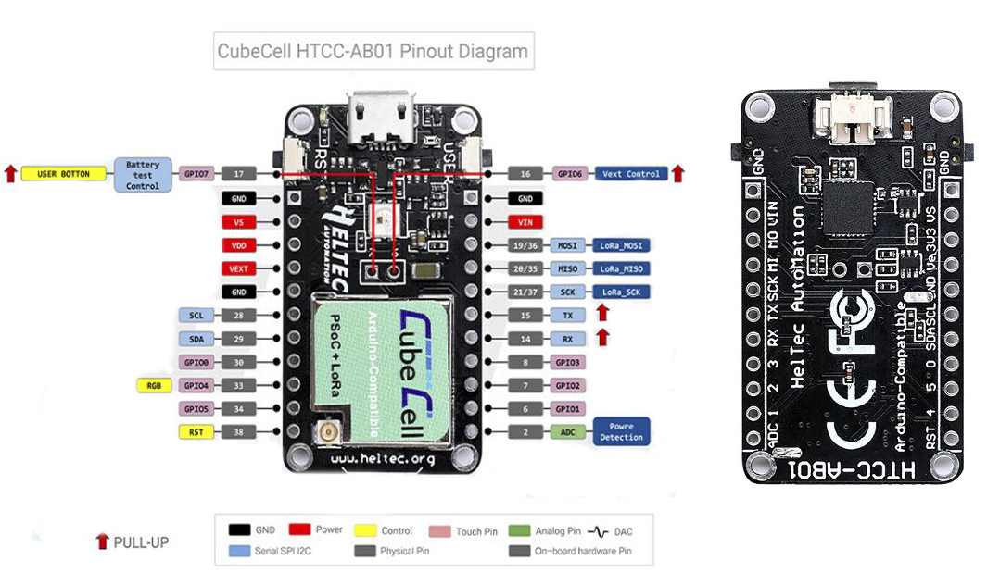

In October Heltec launched the CubeCell msu. It is a chip with Arduino-like capabilities and with Lora interface on board. Apart from that, the board has several interfaces that will enable it to connect to well-known sensors, batteries and solar panels.
The following interfaces are defined for CubeCell:
When connected right it should have a very low power consuption.
NOTE: Be aware that this board does not have BlueTooth or WiFi on board (and it should not) in order to keep power consumption low.
The sensors included in the capsule package are I2C based. So apart from the VCC and GND pins they do need a SCL and SDA pin as well.

More information on teh Cube Cell interfaces and installation can be found at the following places: